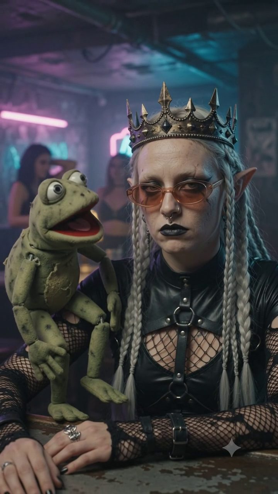

We're bringing AI into the fantasy of D&D — and now we're turning it into a show.
We run live Dungeons & Dragons nights in Tel Aviv, built out of the city’s nightlife rather than its gaming scene. Here’s who we are, how we already use AI to make them, the show we’re building next — and the one part we can’t build alone.
אנחנו מכניסים AI לפנטזיה של D&D, ועכשיו אנחנו הופכים את זה לשואו.
אנחנו מפיקים ערבי מבוכים ודרקונים חיים בתל אביב, מתוך תרבות הבילוי של העיר ולא מתוך קהילת הגיימינג. הנה מי אנחנו, איך אנחנו כבר עובדים עם AI, איזה שואו אנחנו בונים עכשיו — והחלק היחיד שאנחנו לא יכולים לבנות לבד.
Who we are
OY.VEY runs live Dungeons & Dragons nights for a paying audience in Tel Aviv. Our crowd comes from gaming, design and hi-tech — and what makes us different is that we put that world directly inside the city's nightlife, as a natural part of a night out rather than something separate from it. There's a bar, there's good music, and the game belongs to the evening. It works in the other direction too: we bring in people from the nightlife itself, who were sure this game was never meant for them, and give them a way in.
We're on our fourth event now. Every one of them has sold out, and sold out fast — and the community around it is starting to grow and hold together. A ten-minute onboarding puts a complete beginner inside the story.
Fantasy and AI are a natural pairing, and our audience feels that connection immediately. We didn't run a few prompts: we trained a visual style of our own — 80s film stock, a locked palette, grain, finish — so that every episode and every character looks like the same hand made it. The scenes, the episodes, even the theme song came out of generative tools, and then through a finish that blurs where they came from.
We chose not to hide any of that. The artificiality isn't something to hide — it's the style.
How we use AI today to make the game better
The clearest example is the thing every player holds. Every character in our cast was generated inside that trained style, and behind each one sits a real D&D sheet. Guests pick their character on a page of its own before the night even starts — participation begins before entry.
מי אנחנו
OY.VEY מפיקה ערבי מבוכים ודרקונים חיים מול קהל משלם בתל אביב. הקהל שלנו מגיע מעולמות הגיימינג, העיצוב וההייטק — והייחוד שלנו הוא שאנחנו מכניסים את העולם הזה ישירות לתוך תרבות הבילוי של העיר, כחלק טבעי מלילה בעיר ולא כמשהו מנותק ממנו. יש בר, יש מוזיקה טובה, והמשחק שייך לערב. וזה עובד גם בכיוון ההפוך: אנחנו מביאים פנימה אנשים מחיי הלילה עצמם, כאלה שהיו בטוחים שהמשחק הזה לא בשבילם, ופותחים להם דלת.
אנחנו עכשיו באירוע הרביעי שלנו. כולם נמכרו עד הכיסא האחרון, ומהר — והקהילה סביב זה מתחילה לצמוח ולהתגבש. אונבורדינג של עשר דקות מכניס מתחיל גמור לתוך העלילה.
פנטזיה ו-AI הם זיווג מתבקש, והקהל שלנו מתחבר לזה מיד. לא הרצנו כמה פרומפטים: אימנו סגנון ויזואלי משלנו — פילם של שנות ה-80, פלטה נעולה, גרֵין, גימור — כדי שכל פרק וכל דמות ייראו כאילו יצאו מאותה יד. הסצנות, הפרקים ואפילו השיר יצאו מכלים גנרטיביים, ועברו גימור שמטשטש מאיפה הם באו.
בחרנו לא להסתיר את זה. המלאכותיות היא לא משהו להסתיר — היא הסגנון.
איך אנחנו משתמשים ב-AI היום כדי לשפר את חוויית המשחק
הדוגמה הכי מוחשית היא הדבר שכל שחקן מחזיק ביד. כל דמות בקאסט נוצרה בתוך הסגנון שאימנו, ומאחורי כל אחת מהן יושב דף D&D אמיתי. האורחים בוחרים את הדמות שלהם בעמוד ייעודי עוד לפני שהערב מתחיל — ההשתתפות מתחילה לפני הכניסה.
Six characters. One trained visual style.
שש דמויות. סגנון ויזואלי אחד שאימנו.
tap a card
לחצו על קלף
This is how we bring the modern era, and the language of gaming, into a game that has stayed analog since 1974.
ככה אנחנו מכניסים את העידן המודרני, ואת השפה של עולם הגיימינג, לתוך משחק שנשאר אנלוגי מאז 1974.
The show we're building
The night itself is a Dungeons & Dragons session, and the players around the table are stage people from the city — musicians, comedians, performers. What they have in common isn't that they play D&D. It's that they know how to hold a room and take it with them.
There are two audiences. One sits with us on tickets we sell. The other is much larger and watches later — the sixty people in the room are the size of the set, not the size of the audience. What comes out of the night: a full podcast-style episode that carries the whole show, and a set of vertical clips cut from it.
Our main goal is to pull people inside the story. Part of that happens on its own, through imagination — that's what this game has always done. The rest is a visual layer, generated by AI, showing what's happening in the adventure while it happens. In the room it runs on a screen behind the table. For the audience watching online, it's what makes the story visible at all — and that's the harder, more important half.
The show is built to hold a story and to be hard to look away from at the same time: imagination meeting technology. That's why we're looking for a partner at the front of this — one that knows how to tell a story live.
We’re here to blur the line between what’s real and what’s imagined.
What this gives you
The first thing is the one that's hard to buy: your technology seen the way nobody shows it. Not a conference demo and not a product film — running live inside a show people bought a ticket to, in front of a room that reacts in real time, on camera.
The second is where it lands. Our room is gaming, design and hi-tech — your audience already — meeting you somewhere they never expected to. It starts here in Israel, and it doesn't stop here: we're building the infrastructure to produce this in English too, where the audience for this format actually lives.
The scale of this format in English. In 2026 the makers of D&D launched a show of their own — the category is no longer niche.
What the night turns into: a full podcast-style episode and 6–8 vertical clips, several built with your technology as the lead rather than a mention. It keeps working long after the night — the film is the asset, not the evening.
And beside the people who understand exactly what they're looking at, there's a nightlife crowd meeting it for the first time. Those two reactions in the same room are something a controlled demo can never produce.
What we're looking for
A partner on two fronts. The first is the technology: visuals generated in real time, matched to the adventure as it unfolds and driven by the actual players and characters at the table. Everything we make with AI today is prepared in advance — live is the one thing we can't do on our own. The second is production funding, so the night gets made at the level it deserves: crew and cameras, casting, editing, and the venue.
D&D has been a generative engine since 1974: an operator improvising a world for a table of users, with a die for temperature. Its one weakness is that the theater of the mind stays inside one head — nobody else in the room ever sees the picture. That's the part technology can finally solve.
We're not coming with a spec. We'd like to sit down and work out together what's worth building, so this night happens the right way.
Let’s talk about marketing that comes from a community and a culture —
AND LET’S MAKE TEL AVIV FREAK AGAIN
I create alternative nights for Tel Aviv and the communities that grow around them — taking worlds that sit outside the city’s nightlife and making them belong inside it.
Phone054-803-6035 Emailliorpeled93@gmail.comהשואו שאנחנו בונים
הערב עצמו הוא סשן מבוכים ודרקונים, והשחקנים סביב השולחן הם אנשי במה מהעיר — מוזיקאים, קומיקאים, אנשי הופעה. המשותף להם הוא לא שהם משחקים D&D, אלא שהם יודעים להחזיק חדר ולסחוף אותו איתם.
יש לנו שני קהלים. אחד יושב איתנו במקום, על כרטיסים שאנחנו מוכרים. השני גדול בהרבה וצופה אחר כך — 60 האנשים בחדר הם גודל הסט, לא גודל הקהל. ומה שיוצא מהערב: פרק מלא בסגנון פודקאסט שמחזיק את השואו כולו, ולצידו סדרת קליפים ורטיקליים שנחתכים ממנו.
המטרה המרכזית שלנו היא להכניס את הקהל לתוך הסיפור. חלק מזה קורה מעצמו, דרך הדמיון — זה מה שהמשחק הזה תמיד ידע לעשות. את השאר עושה שכבה ויזואלית שנוצרת ב-AI ומראה מה קורה בהרפתקה בזמן שזה קורה. בחדר היא רצה על מסך מאחורי השולחן. לקהל שצופה ברשת היא מה שהופך את הסיפור לגלוי בכלל — וזה החצי הקשה והחשוב יותר.
המופע בנוי להחזיק עלילה ובו בזמן להיות כזה שקשה להוריד ממנו את העיניים: דמיון שפוגש טכנולוגיה. ולכן אנחנו מחפשים שותפה שנמצאת בחזית של זה, ויודעת לספר סיפור בלייב.
אנחנו פה כדי לטשטש את ההבדל בין מציאות לדמיון.
מה זה נותן לכם
הדבר הראשון הוא זה שהכי קשה לקנות: הטכנולוגיה שלכם נראית איך שאף אחד לא מראה אותה. לא דמו בכנס ולא סרטון מוצר — רצה חי בתוך שואו שאנשים קנו לו כרטיס, מול חדר שמגיב בזמן אמת, על מצלמה.
הדבר השני הוא איפה זה נוחת. בחדר שלנו יושבים אנשי גיימינג, עיצוב והייטק — כלומר הקהל שלכם — במקום שהם לא ציפו לפגוש אתכם בו. זה מתחיל כאן בישראל, ולא נעצר כאן: אנחנו בונים את התשתית להפיק את זה גם באנגלית, שם שבו הקהל של הפורמט הזה באמת נמצא.
סדר הגודל של הפורמט הזה באנגלית. ב-2026 גם היוצרים של D&D עצמם השיקו סדרה משלהם — הקטגוריה כבר לא נישה.
למה הערב הופך: פרק מלא בסגנון פודקאסט ו-6 עד 8 קליפים ורטיקליים, כמה מהם עם הטכנולוגיה שלכם ככוכבת ולא כאזכור. וזה ממשיך לעבוד הרבה אחרי הערב — הנכס הוא הסרט, לא הערב עצמו.
ולצד האנשים שמבינים בדיוק מה הם רואים, יש בחדר קהל בילוי שנתקל בזה בפעם הראשונה. שתי התגובות האלה באותו חדר הן משהו שדמו מבוקר לעולם לא ייצר.
מה אנחנו מחפשים
שותפה בשני מישורים. הראשון הוא הטכנולוגיה: ויז'ואל שנוצר בזמן אמת, מתאים להרפתקה בזמן שהיא קורית, ונשען על השחקנים והדמויות שיושבים סביב השולחן. כל מה שאנחנו עושים היום עם AI מוכן מראש — חי זה הדבר היחיד שאנחנו לא יכולים לעשות לבד. השני הוא מימון ההפקה, כדי שהערב ייווצר ברמה שהוא ראוי לה: צוות ומצלמות, קאסטינג, עריכה ומקום.
מבוכים ודרקונים הוא מנוע גנרטיבי מאז 1974: מפעיל שממציא עולם לשולחן של משתמשים, וקובייה שמשמשת טמפרטורה. החולשה היחידה שלו היא ש-theater of the mind נשאר בתוך ראש אחד — אף אחד אחר בחדר לא רואה את התמונה. זה בדיוק החלק שהטכנולוגיה יכולה סוף-סוף לפתור.
אנחנו לא באים עם ספסיפיקציה. אנחנו רוצים לשבת ולהבין ביחד מה שווה לבנות, כדי שהערב הזה יקרה בצורה הנכונה.
בואו נדבר על שיווק מתוך קהילה ותרבות.
LET’S MAKE TEL AVIV FREAK AGAIN
אני מייצר ערבים אלטרנטיביים לתל אביב ואת הקהילות שנבנות סביבם — לוקח עולמות שיושבים מחוץ לחיי הלילה של העיר, וגורם להם להשתייך אליהם.
טלפון054-803-6035 אימיילliorpeled93@gmail.com